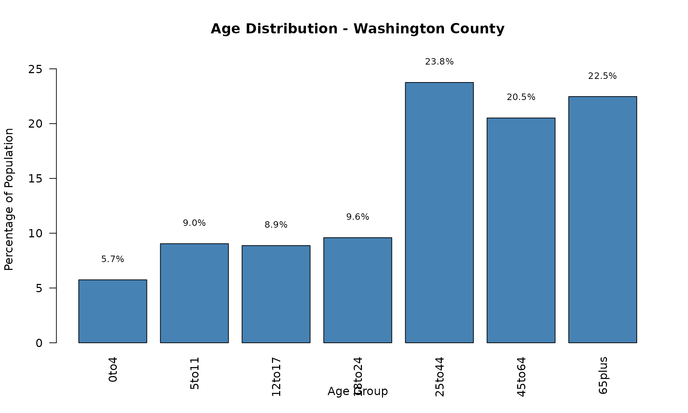
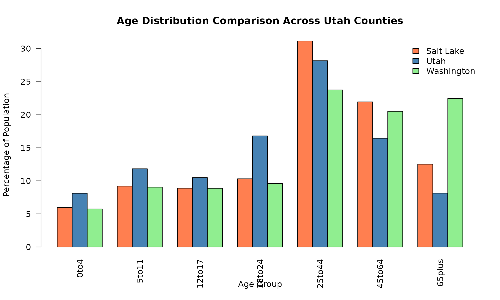
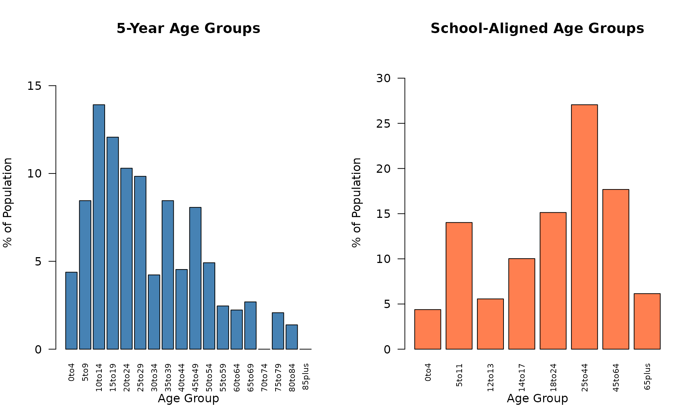

Using Census Data Functions
census_functions_demo.RmdIntroduction
This vignette demonstrates how to use the census data functions in
the multigroup.vaccine package. These functions allow you
to:
- Look up state FIPS codes
- List counties within a state
- Retrieve population data by age groups
- Retrieve city-level population data with flexible age grouping
- Run outbreak models with easily accessible real-world data
We’ll walk through a complete example using Utah county data.
library(multigroup.vaccine)
library(socialmixr)
# Get the path to the included census data file
census_csv <- getCensusDataPath()Step 1: Getting State FIPS Codes
The getStateFIPS() function looks up the FIPS code for a
state by name. FIPS codes are standardized identifiers used by the U.S.
Census Bureau.
# Get FIPS code for Utah
utah_fips <- getStateFIPS("Utah")
cat("Utah FIPS code:", utah_fips, "\n")
#> Utah FIPS code: 49
# You can also try other states
california_fips <- getStateFIPS("California")
cat("California FIPS code:", california_fips, "\n")
#> California FIPS code: 06
texas_fips <- getStateFIPS("Texas")
cat("Texas FIPS code:", texas_fips, "\n")
#> Texas FIPS code: 48Step 2: Listing Counties
The listCounties() function returns all counties in a
state. This is useful for exploring available data.
# List all counties in Utah
utah_counties <- listCounties(
state_fips = utah_fips,
csv_path = census_csv
)
cat("Counties in Utah:\n")
#> Counties in Utah:
print(utah_counties)
#> [1] "Beaver County" "Box Elder County" "Cache County"
#> [4] "Carbon County" "Daggett County" "Davis County"
#> [7] "Duchesne County" "Emery County" "Garfield County"
#> [10] "Grand County" "Iron County" "Juab County"
#> [13] "Kane County" "Millard County" "Morgan County"
#> [16] "Piute County" "Rich County" "Salt Lake County"
#> [19] "San Juan County" "Sanpete County" "Sevier County"
#> [22] "Summit County" "Tooele County" "Uintah County"
#> [25] "Utah County" "Wasatch County" "Washington County"
#> [28] "Wayne County" "Weber County"
cat("\nTotal number of counties:", length(utah_counties), "\n")
#>
#> Total number of counties: 29Step 3: Retrieving Population Data
The getCensusData() function retrieves population data
for a specific county, organized by age groups.
# Define age groups for analysis
# These represent: 0-4, 5-11, 12-17, 18-24, 25-44, 45-64, 65+
age_limits <- c(0, 5, 12, 18, 25, 45, 65)
# Get data for Washington County, Utah
washington_data <- getCensusData(
state_fips = utah_fips,
county_name = "Washington County",
year = 2024,
age_groups = age_limits,
csv_path = census_csv
)
# Display the results
cat("County:", washington_data$county, "\n")
#> County: Washington County
cat("Year:", washington_data$year, "\n")
#> Year: 2024
cat("Total population:", format(washington_data$total_pop, big.mark = ","), "\n\n")
#> Total population: 207,943
cat("Age distribution:\n")
#> Age distribution:
for (i in seq_along(washington_data$age_labels)) {
pct <- 100 * washington_data$age_pops[i] / washington_data$total_pop
cat(sprintf(" %s: %s (%.1f%%)\n",
washington_data$age_labels[i],
format(washington_data$age_pops[i], big.mark = ","),
pct))
}
#> 0to4: 11,950 (5.7%)
#> 5to11: 18,808 (9.0%)
#> 12to17: 18,446 (8.9%)
#> 18to24: 19,948 (9.6%)
#> 25to44: 49,399 (23.8%)
#> 45to64: 42,661 (20.5%)
#> 65plus: 46,731 (22.5%)Step 4: Visualizing Age Distribution
Let’s visualize the age distribution to better understand the population structure.
# Create a bar plot of age distribution
age_percentages <- 100 * washington_data$age_pops / washington_data$total_pop
barplot(age_percentages,
names.arg = washington_data$age_labels,
main = paste("Age Distribution -", washington_data$county),
xlab = "Age Group",
ylab = "Percentage of Population",
col = "steelblue",
las = 2,
ylim = c(0, max(age_percentages) * 1.1))
# Add percentage labels on top of bars
text(x = seq_along(age_percentages) * 1.2 - 0.5,
y = age_percentages + 1,
labels = sprintf("%.1f%%", age_percentages),
pos = 3,
cex = 0.8)
Step 5: Comparing Multiple Counties
Let’s compare the age distributions of three different Utah counties.
# Get data for three counties
counties_to_compare <- c("Salt Lake County", "Utah County", "Washington County")
county_data_list <- list()
for (county in counties_to_compare) {
county_data_list[[county]] <- getCensusData(
state_fips = utah_fips,
county_name = county,
year = 2024,
age_groups = age_limits,
csv_path = census_csv
)
}
# Create comparison matrix
comparison_matrix <- matrix(0, nrow = length(counties_to_compare),
ncol = length(age_limits))
colnames(comparison_matrix) <- washington_data$age_labels
rownames(comparison_matrix) <- c("Salt Lake", "Utah", "Washington")
for (i in seq_along(counties_to_compare)) {
county_name <- counties_to_compare[i]
data <- county_data_list[[county_name]]
comparison_matrix[i, ] <- 100 * data$age_pops / data$total_pop
}
# Plot comparison
barplot(comparison_matrix,
beside = TRUE,
main = "Age Distribution Comparison Across Utah Counties",
xlab = "Age Group",
ylab = "Percentage of Population",
col = c("coral", "steelblue", "lightgreen"),
legend.text = rownames(comparison_matrix),
args.legend = list(x = "topright", bty = "n"),
las = 2)
Step 6: Using City-Level Data (getCityData)
In addition to census data, the package includes functions to work with city-level population data from ACS (American Community Survey) estimates. Let’s demonstrate using Hildale, UT as an example.
Example 1: Default 5-year Age Groups
# Get path to Hildale data
hildale_path <- system.file("extdata", "hildale_ut_2023.csv", package = "multigroup.vaccine")
# Load with default 5-year age groups (0-4, 5-9, 10-14, ...)
hildale_5yr <- getCityData(
city_name = "Hildale city, Utah",
csv_path = hildale_path
)
cat("Hildale, UT - 5-year Age Groups\n")
#> Hildale, UT - 5-year Age Groups
cat("================================\n")
#> ================================
cat("Total population:", format(hildale_5yr$total_pop, big.mark = ","), "\n\n")
#> Total population: 1,301
cat("Age distribution:\n")
#> Age distribution:
for (i in seq_along(hildale_5yr$age_labels)) {
pct <- 100 * hildale_5yr$age_pops[i] / hildale_5yr$total_pop
cat(sprintf(" %s: %s (%.1f%%)\n",
hildale_5yr$age_labels[i],
format(hildale_5yr$age_pops[i], big.mark = ","),
pct))
}
#> 0to4: 57 (4.4%)
#> 5to9: 110 (8.5%)
#> 10to14: 181 (13.9%)
#> 15to19: 157 (12.1%)
#> 20to24: 134 (10.3%)
#> 25to29: 128 (9.8%)
#> 30to34: 55 (4.2%)
#> 35to39: 110 (8.5%)
#> 40to44: 59 (4.5%)
#> 45to49: 105 (8.1%)
#> 50to54: 64 (4.9%)
#> 55to59: 32 (2.5%)
#> 60to64: 29 (2.2%)
#> 65to69: 35 (2.7%)
#> 70to74: 0 (0.0%)
#> 75to79: 27 (2.1%)
#> 80to84: 18 (1.4%)
#> 85plus: 0 (0.0%)Example 2: Custom Age Groups for School-Based Analysis
Now let’s use custom age groups that align with school levels: pre-school (0-4), elementary (5-11), middle school (12-13), high school (14-17), and adult groups.
# Define school-aligned age groups
school_age_groups <- c(0, 5, 12, 14, 18, 25, 45, 65)
hildale_school <- getCityData(
city_name = "Hildale city, Utah",
csv_path = hildale_path,
age_groups = school_age_groups
)
cat("\nHildale, UT - School-Aligned Age Groups\n")
#>
#> Hildale, UT - School-Aligned Age Groups
cat("========================================\n")
#> ========================================
cat("Total population:", format(hildale_school$total_pop, big.mark = ","), "\n\n")
#> Total population: 1,301
cat("Age distribution:\n")
#> Age distribution:
for (i in seq_along(hildale_school$age_labels)) {
pct <- 100 * hildale_school$age_pops[i] / hildale_school$total_pop
cat(sprintf(" %s: %s (%.1f%%)\n",
hildale_school$age_labels[i],
format(hildale_school$age_pops[i], big.mark = ","),
pct))
}
#> 0to4: 57 (4.4%)
#> 5to11: 182.4 (14.0%)
#> 12to13: 72.4 (5.6%)
#> 14to17: 130.4 (10.0%)
#> 18to24: 196.8 (15.1%)
#> 25to44: 352 (27.1%)
#> 45to64: 230 (17.7%)
#> 65plus: 80 (6.1%)Visualizing the Comparison
# Create a comparison visualization
par(mfrow = c(1, 2), mar = c(5, 4, 4, 2))
# Plot 5-year groups
age_pct_5yr <- 100 * hildale_5yr$age_pops / hildale_5yr$total_pop
barplot(age_pct_5yr,
names.arg = hildale_5yr$age_labels,
main = "5-Year Age Groups",
xlab = "Age Group",
ylab = "% of Population",
col = "steelblue",
las = 2,
cex.names = 0.7,
ylim = c(0, max(age_pct_5yr) * 1.2))
# Plot school-aligned groups
age_pct_school <- 100 * hildale_school$age_pops / hildale_school$total_pop
barplot(age_pct_school,
names.arg = hildale_school$age_labels,
main = "School-Aligned Age Groups",
xlab = "Age Group",
ylab = "% of Population",
col = "coral",
las = 2,
cex.names = 0.7,
ylim = c(0, max(age_pct_school) * 1.2))
This demonstrates how getCityData() provides flexibility
in age grouping. The 5-year groups follow standard ACS categories, while
custom groups can be defined to match specific analysis needs (e.g.,
school grades, epidemiological contact patterns).
Summary
This vignette demonstrated the key population data functions in the
multigroup.vaccine package:
-
getStateFIPS(): Look up state FIPS codes -
listCounties(): List all counties in a state -
getCensusData(): Retrieve county-level population data by age groups from U.S. Census -
getCityData(): Retrieve city-level population data from ACS with flexible age grouping
These functions make it easy to work with real population data from both census (county-level) and ACS (city-level) sources. The flexible age grouping options allow you to structure data according to your specific analysis needs, whether for epidemic modeling, demographic analysis, or other applications. You can apply these same techniques to any state and county in the United States.